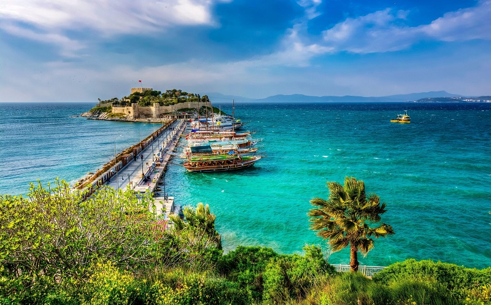

кушадаши
Описание курорта
Кушадасы — турецкий город на берегу Эгейского моря. Соседями-курортами являются: с юга — Дидим, с севера — Измир и Чешме. Туристы в основном прилетают в аэропорт Бодрума, поэтому трансфер занимает более 2 часов, хотя есть более близкий аэропорт в Измире.
Средиземноморский климат с низкой влажностью. Красивая живописная природа. Лазурное море заставляет восторгаться. На улицах города растут персики, бананы, гранаты и апельсины.
История
История местности насчитывает более 5000 лет. Считается, что первыми поселенцами были лелеги, с 11 век до нашей эры район населяли греки, после — персы. В 4 веке до нашей эры во время завоеваний Александром Македонским, эта территория тоже освобождается от господства персов. На это период приходится расцвет города. Во 2 веке нашей эры входит в состав Римской Империи. Но новый город построен византийцами и назывался Скала Нова, переводится как «новый порт». Затем, вплоть до завоевания турками, играет роль важнейшего венецианского торгового города. Во времена Османской империи, вплоть до 80-х годов 20 века является значимым портом. Тогда начинается бурное строительство города и развитие туристической отрасли в этом регионе.
Современное название «Кушадасы» город получил в начале 20 века, что в переводе означает «голова птицы». Тема птиц затрагивается в городе повсюду. Сегодня небольшой городок Кушадасы — это возможность увидеть другую Турцию, не похожую на Анталию. Сюда часто приезжают европейцы и порою остаются навсегда, влюбившись в уютные улочки и прекрасное море. Развитая инфраструктура: рестораны, кафе, рынки, магазины, ночные клубы. Доступный и разнообразный шопинг. Цены тут ниже по сравнению с другими курортами Турции. А в 20 минутах от центра есть местечко Сёке, где можно купить брендовые вещи со скидками. Курорт, который еще не открыли русские, поэтому по-русски мало кто говорит, все с туристами изъясняются на английском языке.
Здесь обязательная остановка круизов по Эгейскому морю, так как это прекрасная отправная точка для осмотра исторических достопримечательностей, расположенных на полуострове Малой Азии.
Курорт представляет собой сам город и поселки к северу и к югу от него.
Наилучшие виды в городе — вдоль променада, который соединяет гавань для лайнеров с мариной для яхт.
С хорошими пляжами в черте города несколько сложно. Есть общественные, среди них известный “Дамский пляж”.
По отзывам, город несколько грязнее по сравнению с другими курортами, но при этом море чистое. Обилие пыли связана, что недалеко находится мраморный карьер и сам город застраивается невероятной скоростью — много объектов строительства. Отелей все включено немного.
Если планируете отдых активный, культурный, с посещением достопримечательностей — выбирайте отели в самом городе, например: DoubleTree by Hilton Hotel Kusadasi, Efe Boutique Hotel. А также сдается огромное количество квартир, вилл, апартаментов на любой кошелек.
Север
Отели, расположенные северной части курорта, являются более дорогими, для более взыскательных гостей.
Вот список с собственным пляжем: Richmond Ephesus Resort, KoruMar Ephesus Beach & Spa Resort, Palm Wings Ephesus Beach Resort, Aqua Fantasy Aquapark Hotel & Spa, Kustur Club Holiday Village, KoruMar Hotel De Luxe.
Здесь находится довольно известный пляж — Pamucak, с пологим входом, широкой береговой линией, и великолепными океанскими волнами.
Досуг с детьми можно провести в аквапарках: Адаланд и Aqua Fantasy.
Южная часть представлена курортными поселками: Согучак и Гюзельчамлы.
Согучак(Soğucak)
Здесь находится длинный пляж(Long Beach). Красивая набережная вдоль всего пляжа, с недорогими кафе. В поселке есть все для жизни. Также для активного досуга и тусовки вам могут подойти 2 аквапарка: Atlantis Aqua и Tortuga Pirate Island.
Отелей бюджетные: Omer Holiday Resort 4*, Ephesia Holiday Beach Club 4*, Batıhan Beach Resort & Spa 4*, Risus Aqua Beach Resort Hotel 5*.
Гюзельчамлы(Güzelçamlı)
Живописный поселок в 40 минутах езды от центра города. Место для тех, кто любит природу и хочет отдохнуть спокойно и тихо. Много фруктовых и плодовых деревьев. Длинная береговая линия. Особенно нравится семьям с детьми пляж Ичмелер. Недалеко находится греческий остров Самос, куда есть экскурсии.
Отели: Grand Belish Hotel, Flora Garden Ephesus Hotel, Hotel Akbulut & Spa, Faustina Hotel с пирсом.
Чем заняться в Кушадасы?
Для семей детей хорошо подойдут аквапарки.
Адаланд — не новый, не очень большой по размерам. Есть дельфинарий, горки для детей и взрослых. Везде чисто, много зелени. Цена — от 17 EURO.
Aqua Fantasy - самый большой в Кушадасы, много горок.
Tortuga Pirate Island — стоящее место, чтобы приехать с семьей. С пиратской концепцией. Аттракционы хорошо спланированы и организованы. Вход — от 200 лир.
Atlantis Aqua. Расположен на берегу моря. Интересно будет детям с 2 до 7 лет, так как много маленьких горок. Вход от 150 турецких лир в зависимости от сезона и возраста посещающего.
Птичий остров
Главная достопримечательность курорта, его визитная карточка, так как Кушадасы повсюду сопровождает птичья тематика. Назван из-за большого скопления голубей. Сейчас их не так много. Да и остров уже соединен с городом мостом. Размером в торговый центр. 90% острова сейчас — это древняя крепость. Первые укрепления были возведены генуэзцами. А строительством современного замка руководил османский адмирал Хайр-ад-Дин Барбаросса.
Территория ухоженная, есть информационные щиты с ознакомлением флоры и фауны острова. Можно увидеть мини-парк с большим количеством деревьев, цветов, кустов. Есть музей с несколькими макетами кораблей и огромным скелетом кита. С одной стороны острова город виден как на ладони, с другой — море с кораблями, яхтами. Вечером — потрясающая подсветка крепости. Рядом с островом стоят туристические кораблики. Вход бесплатный.
Национальный парк Дилек
Парк с красивыми бухтами и зеленью, есть асфальтированная дорога. Всего там 4 пляжа, раскинутых вдоль всего парка. Неплохо прогуляться по каньону первые 2 километра, интересно взглянуть на огромные отвесные скалы. Вода чистейшая и прозрачная как стекло. Много уникальных растений. Встречаются дикие кабаны, которых туристы подкармливают.
Вход в заповедник платный, стоимость зависит от того, проходите вы туда пешком или на транспорте.
В парке есть пещера Зевса — минерализованное озеро глубиной 30 метров. Вода ледяная. Но люди купаются. Много легенд: одни говорят, что Зевс здесь купался с прекрасными девушками, прячась от Зевы. По другой версии громовержец укрывался от гнева брата Посейдона во время шторма. Красивое место.
Памуккале
Удобнее добираться до Памуккале отсюда. Это известные термальные источники. Подробнее читайте в нашей статье "Памуккале".
Эфес
Если вы совмещаете пляжно-коктейльный отдых с активным, то надо обязательно познакомиться с древним городом Эфес. О нем и об экскурсиях читайте в нашей статье "Эфес"
Монастырь Куршунлу
Расположен в 10 километрах от поселка Давутлара. Открывается шикарный вид на Эгейское море. Был построен византийцами в 11 веке. По остатакам видно, что было красивым сооружением. На сегодня строение сильно разрушено, но любителям древних памятников понравится и рекомендуется.
Доганбей (Old Doğanbey Houses)
Старая греческая деревня. Дома были восстановлены в своем первоначальном виде. Есть хорошие кафе. Есть небольшой музей с чайным домиком. Какие-то ремесленные лавки. Хорошее место, чтобы прогуляться, сделать красивые фотографии и почувствовать историю.
Пожилым, а также для лечения различных заболеваний стоит посетить термальные источники Балчова, пройти курс лечения минеральными и грязевыми ваннами, а также питьём.
Вы можете увидеть окрестности, совершая морские прогулки, познакомиться с колоритными деревушками с красивыми пейзажами. Для любителей подводного плавания тоже есть чем заняться — дайвинг к специальному затопленному самолету. Можно совершить прогулки на квадроциклах, байке и даже на лошадях, брать на прокат велосипед и прокатиться по длинной красивой набережной или к менее людному пляжу. В мельничной ферме прекрасно прогуляться с семьей. Здесь красиво, много животных и птиц, пруд с мостом, также можно отведать или закупиться натуральными продуктами. Полюбоваться потрясающими закатами в красивом городе.
Удачного отдыха в Кушадашах, еще больше интересного в Турции (список статей ниже).
Статьи о Турции
Best Things to Do in Paraty, Brazil You Can't Miss
www.laidbacktrip.com
Worth the trip: A visit to paraty
www.vayaadventures.com
Хотите в Турцию?
Get in touch and let our team help you put things together and plan your move.